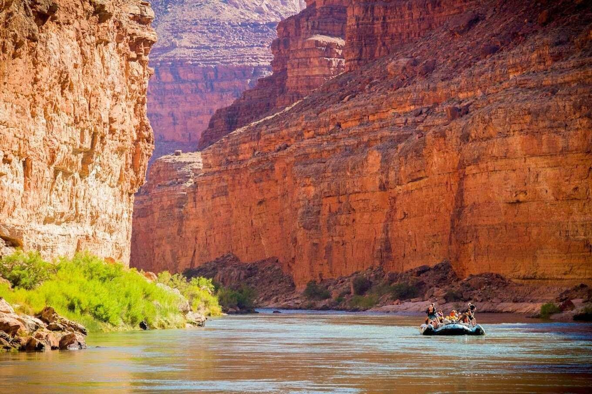
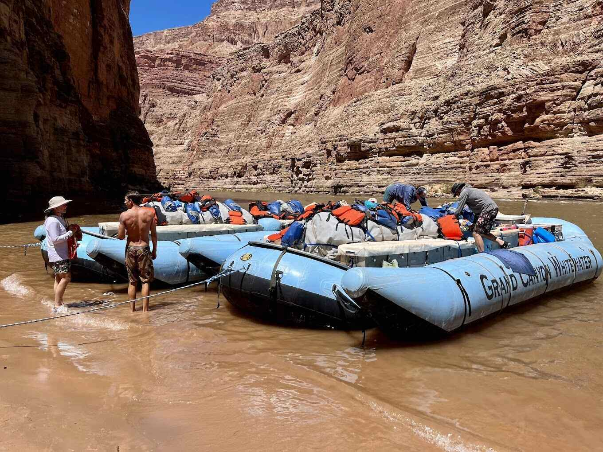
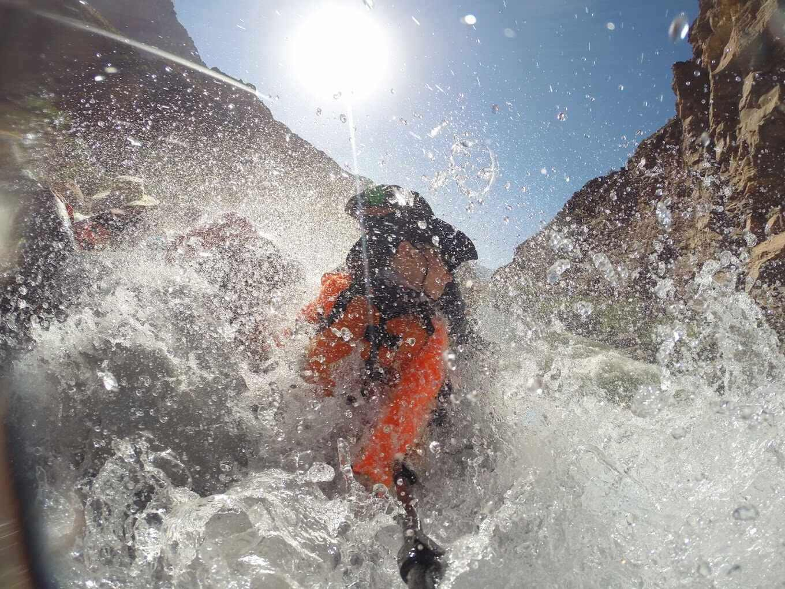

The Grand Canyon

Amazing Views
The Grand Canyon offers some of the most breathtaking and awe-inspiring views on Earth. Stretching for 277 miles and plunging up to a mile deep, this natural wonder captivates visitors with its immense size and stunning geological formations. As you stand at the rim and gaze into the vast chasm, you are greeted with an incredible panorama of layered rock walls, carved by the mighty Colorado River over millions of years. The colors are nothing short of spectacular, ranging from vibrant reds and oranges to deep purples and browns, creating a mesmerizing tapestry of earth tones. The interplay of light and shadow adds another dimension to the landscape, casting ever-changing patterns that enhance the canyon's beauty throughout the day. Whether you're witnessing a vibrant sunrise or a golden sunset, the Grand Canyon's views are truly magical, leaving visitors in awe of nature's grandeur and reminding us of the Earth's incredible history and geological forces at work.

Excellent Equipment
Rafting equipment encompasses a range of essential gear designed to ensure safety, comfort, and performance during thrilling water adventures. At the core of rafting equipment lies the sturdy and inflatable raft itself, typically constructed from durable materials like PVC or hypalon. Paddles or oars are essential tools for maneuvering and steering the raft, while personal flotation devices (PFDs) provide crucial buoyancy and protection. Helmets and wetsuits offer additional safety measures, shielding rafters from potential impact and maintaining warmth in cold waters. Other vital equipment includes throw bags, rescue ropes, and first aid kits, which contribute to swift and efficient response in emergency situations. By employing this comprehensive array of rafting equipment, adventurers can fully embrace the exhilarating experience of navigating roaring rapids while ensuring their well-being along the way.

Exhilarating
Exhilarating rafting is an electrifying adventure that propels individuals into a realm of thrilling sensations and breathtaking natural beauty. As the raft cuts through the churning rapids, adrenaline courses through one's veins, heightening the senses and awakening an innate sense of adventure. The surging waters demand teamwork and quick thinking as participants navigate through unpredictable twists and turns, embracing the exhilaration and the rush of the moment. The roaring rapids, surrounded by awe-inspiring landscapes, evoke a sense of both vulnerability and empowerment, creating an unforgettable experience that leaves hearts pounding and spirits invigorated.